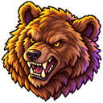
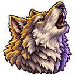
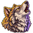
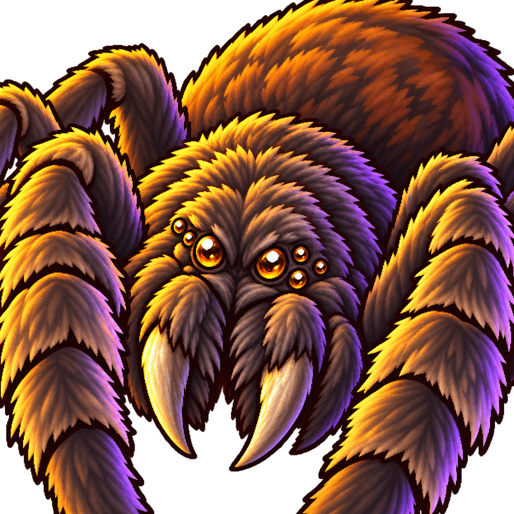
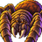
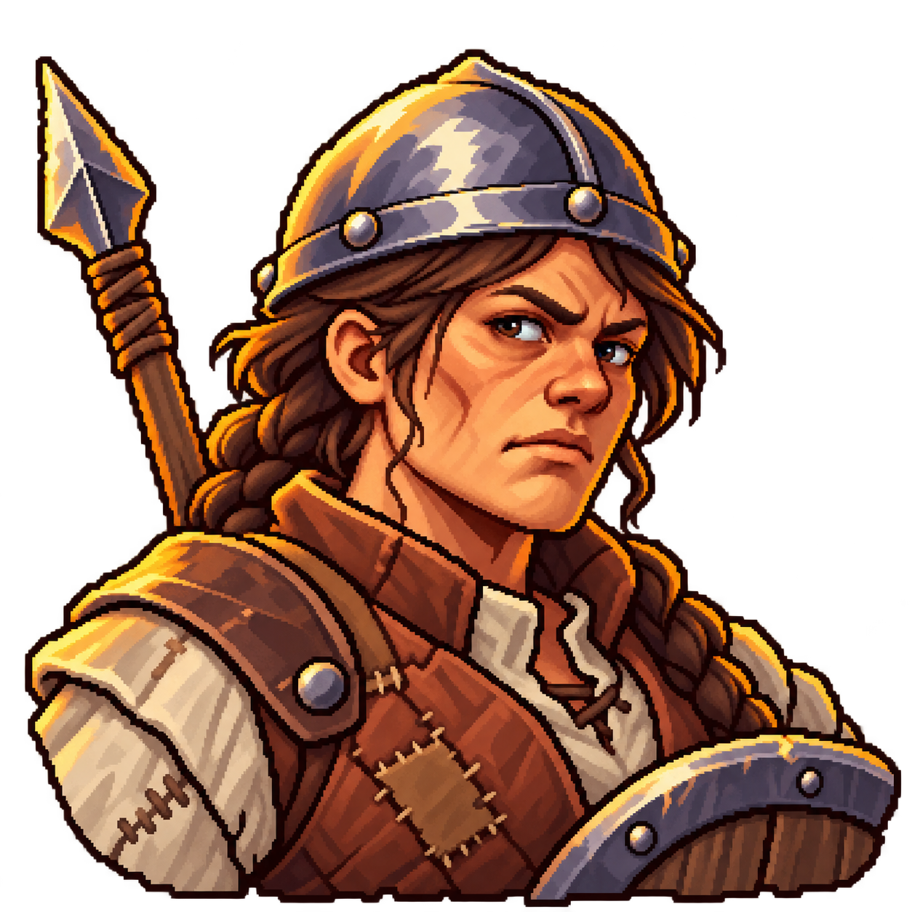
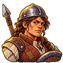
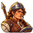

Skirmish tokens · revised concepts
Head-only bear, howling wolf and closer giant spider. Village militia is unchanged. Transparent sources are shown with 128px map tokens and 48px readability checks. These are for review; the game asset slots have not been replaced. Open the one-page comparison.
Bears
Head-only brown bear

128px map token48px checkWolves
Howling gray wolf

128px map token
48px checkGiant spiders
Colossal close-up

128px map token
48px check Village militia
Unchanged


128px map token
48px check